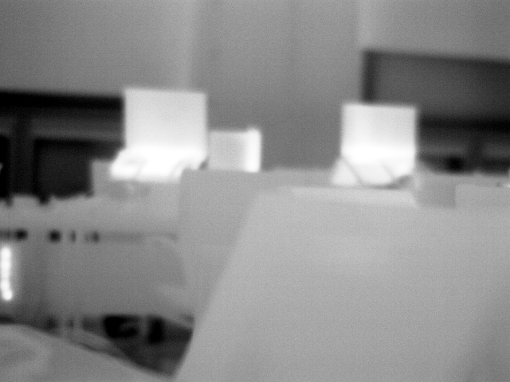
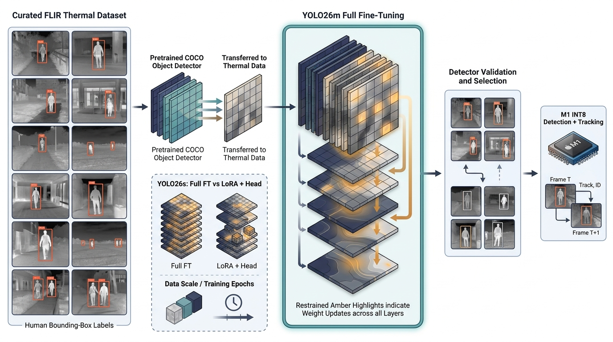
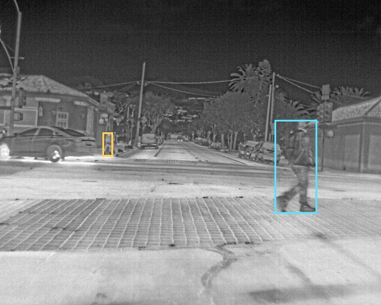
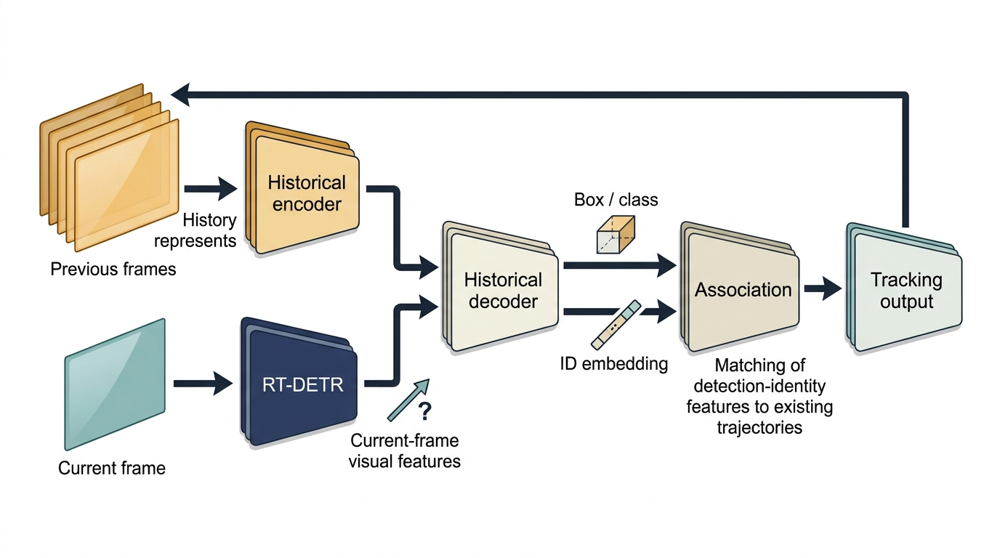

내가 맡은 일: 학습에서 짐벌 제어까지
01 · 열화상 검출 학습

10,491장
데이터 규모와 FT·LoRA를 비교하고 YOLO26m을 학습
02 · 실제 운영 화면 확인

검출 · ID 추적
모델 출력을 운영 화면에서 확인
캡처: TMOT 녹화 재생
03 · 짐벌 제어·시험

4회 → 1회
상하 시험에서 정지 후 방향 반전 비교
조건별 각 1회 · 가로 지표 악화도 관측
데이터 규모와 FT·LoRA를 비교하고 YOLO26m을 학습
모델 출력을 운영 화면에서 확인
캡처: TMOT 녹화 재생

상하 시험에서 정지 후 방향 반전 비교
조건별 각 1회 · 가로 지표 악화도 관측

DX-M1FLIR 데이터 → 사전학습 모델 → 파인튜닝 → 검증 → DX-M1 적용. DX-M1은 검출기 실행 장치이며, 추적은 별도 처리 단계다.
FigureLabs 생성 개념도 · 열화상 장면은 예시 이미지이며, 실제 실험 사진이나 결과 그래프가 아님
계열 비교는 s급·시드 1회 기준. 이 결과만으로 m급의 우월성을 증명할 수는 없다.
가시광 사전학습 가중치에서 출발해 열화상 검출로 적응시킨 기본 실험. 소형 객체 후속 재학습 설정은 다음 장에 구분했다.

30은 비교에 사용한 최대 예산이며 최적 종료 시점을 입증한 값은 아니다. s급 학습 곡선과 m급 후보 실험을 구분한다.
최고 후보 51.06%는 기본보다 0.34%p 높았다. 작은 사람 구간의 일관된 개선은 확인하지 못했다.

YOLO26s · 30에폭 · FLIR 검증 6개 클래스 mAP50–95 (%)
YOLO26s · FLIR 10,491장 · 6개 클래스 검증 mAP50–95 (%)
YOLO26s · 라벨 10% · 6개 클래스 mAP50–95 (%)
30에폭
5,049 업데이트
YOLO26s · FLIR 6개 클래스 mAP50–95 · 30에폭 · seed 202 · y축 25–45% 확대
실측: 262·1,074·4,196·10,491장. 빈 점과 *는 실험이 아닌 직선 보간 추정. 업데이트 수도 함께 증가해 이미지 수만의 효과로 단정할 수 없음. 4천 장은 FLIR YOLO26s 결과에 근거한 가설이며, 새로운 자세 모델에 그대로 적용할 최적점은 아님.
YOLO26s · 라벨 10% · 각 5,049 업데이트 · 6개 클래스 mAP50–95
FLIR 검증 1,144장 · 1채널 재학습 · PC FP32
YOLO26m Full FT 기준 사람 AP50–95 50.72% · FLIR 검증
사람 기준 · XYWH+NSA 고정 · 개발 영상 · 시드 303 비교
실외 검증 761프레임 · PC FP32 · 검출 점수 기준 0.25
각 단계는 앞 가중치에서 이어 학습하며, 새 자료를 추가할 때 기존 자료를 함께 사용한다. 우리 카메라 자료로 1차 추가 학습·평가를 진행했다.
사람 몸과 관절의 기본 형태
열화상 몸 상자 학습 후 가림·화질 증강
흑백 사람 자세를 섞어 형태 보강
사람끼리 겹치는 실제 가림 사례 보강
열화상 중·원거리 장면을 포함한 범용 후보
검수 라벨로 1차 추가 학습 · 후보 미채택
화살표 순서로 기존 자료에 새 자료를 추가하며 이어 학습. 자체 야외 녹화는 직접 남긴 정답을 검수·정제해 학습과 평가에 사용했다.
자체 사진·라벨은 공개 저장소에 올리지 않음. 검수·배경 정제의 역할은 라벨이 없는 사람이 배경으로 학습되는 문제를 줄이는 것이다.
자체 실내 자료는 3배 반복. 공개 자료를 섞어 원래 검출 성능이 사라지는지 함께 확인했다. 입력 640 · 워밍업 2 epoch.
범용 F와 자체 학습 후보 NF · 최종 시험 각 1회 · 사람 찾은 비율
먼 사람·실내 찾기는 증가했지만 야외 전체와 실내 오검출 기준을 통과하지 못했다(실내 오검출 0.068→0.152/장). 장치용으로 변환하지 않았다.
공개 TMOT 검증 · 범용 F와 자체 학습 첫 후보
사전 기준상 다른 항목이 탈락해 최종 채택하지 않았다. 실내 655장을 추가한 2차 후보는 진행 중이며, 실내 시험과 촬영 조건이 겹쳐 결과는 참고용이다.
열화상 화질을 흉내 낸 변환도 사용. 각 증강의 단독 효과는 자세 모델에서 따로 검증하지 못했다.

이어 학습을 큰 학습률로 시작하면 초기에 점수가 떨어져 학습률을 낮췄다. 조기 종료를 끄고 마지막 가중치를 넘기는 것은 후속 학습 계획이다.
자체 카메라 1차 후보는 미리 정한 평가 기준을 통과하지 못했다. 새 실내 자료를 더한 2차 후보는 진행 중이다.
사람 검출률 · 실내 녹화 2개와 LLVIP-Pose 시험 · 범용 F는 3회 추가 학습
실내 녹화는 2개뿐. LLVIP는 중거리 야간 자료이며 학습에 같은 카메라 묶음을 사용해 유리할 수 있다. 작은 사람은 다음 장의 TMOT로 평가했다.
근거리 E와 범용 F 비교 · OTP2 test 및 TMOT val
평가 지표가 서로 다르므로 같은 지표 안에서만 비교. TMOT은 후속 보정 검증에도 사용돼 시스템 전체의 최종 미사용 시험은 아니다.
원인: 관절 정보가 없는 MOT17 사람 상자가 전신 크기로 남은 전처리 문제. 전처리 코드는 수정했지만 기존 F·O 가중치에는 미적용. 3단계는 별도 후보로 학습·평가했으며 기존 F 가중치는 그대로다.

이전 이력 + 현재 프레임 → Historical Decoder → 위치·ID 특징 → 연관. 논문 구조를 단순화한 그림이며 YOLO 검출기와 별도 추적기를 연결한 방식과 다르다.
FigureLabs 생성 개념도 · 실제 모델 실행 화면 아님
실내 두 녹화 IDF1은 31.1→22.4, 71.2→60.0으로 악화. 기존 검출기+추적기보다 아직 낮아 시험용이다.
검출과 ID 특징을 함께 학습했다. 열화상 재생 점수는 개선됐지만 실내 일부 영상에서는 악화돼 시험용으로 유지했다.
놓친 뒤 5·10·15프레임 평균 오차. 오류 원인 분석에 같은 TEST 영상을 사용했으므로 독립 최종 시험이 아니다.
우리 녹화 seq_018 · 1,069프레임 · 25fps · 장치 재생
IDF1 (%) · 같은 녹화 기준. 새 GRU와 Kalman은 번갈아 두 번씩 재생해 동일 결과; 이전 GRU는 앞선 기록. 한 영상 결과로 전체 성능을 일반화할 수 없다.
우리 카메라 녹화 14편 · 놓친 위치 오차 / 사람 키 · 낮을수록 좋음
재학습 Mamba는 기존보다 오차가 줄었지만 Kalman보다는 높다. 같은 TEST 영상으로 원인을 분석해 독립 최종 시험은 아님. 기본 위치 기억은 GRU 유지, 새 Mamba는 선택 후보.
코드 변경과 화면 개선이 확인된 상태. 장치 적용 여부와 전후 추적 성능은 별도 검증이 필요하다.
첫 실카메라 시험에서 과대 상자에 의한 잦은 전환을 관찰해 상자 크기 제한과 재시도 대기 로직을 추가했다. 수정 후 효과는 별도 확인이 필요하다.
카메라의 방사 측정 지원·보정표·SDK 호출 확인이 다음 단계다.
2026-11-15 장치 시험 · 속도 통과가 온도 측정 성공을 의미하지는 않는다.
구현과 개선 의도를 기록함. 수정 후 실제 지연 감소량과 장시간 현장 성능은 별도 측정이 필요하다.
실제 장치 · 사람 추종하지 않은 상태 · 조건별 약 5분
장치 적용 후 추가 10분 기록에서 반복 0회. 장시간 운용과 실제 사람 추종 중 성능은 별도 확인이 필요하다.
실카메라 켬·끔 비교는 14분 진행했으며 재포착 성능의 차이는 아직 판단할 수 없다. 주변 탐색 기능은 가상 시험 개선이 뚜렷하지 않아 운영에 켜지 않았다.
실제 8090 화면 · TMOT 검증 영상 재생 · 11월 15일 캡처

별도 실카메라 녹화와 저장된 M1 출력 · 11월 6일
왼쪽과 오른쪽은 서로 다른 촬영·재생 기록. 8090 화면은 TMOT 재생 중이며 실제 짐벌 동시 구동을 증명하지 않음.
개념도
11월 10일 시험 원본 프레임 · 짐벌 카메라가 본 배경
● 변경 전 ● 변경 후 | 상하 위치 오차 (px)
2026년 11월 12일 · 속도별 양방향 각 1회 · 사람 없는 고정 장면
STOP 후 영상 간 이동은 노출·수신 시각을 포함한다. 상하 방향과 SPD 100은 추가 검증 대상이다.
시험한 적분항 설정에서 반복 반전을 관찰해 PD 제어로 조정
화면 중심 부근에서 출발·정지가 반복되는 현상 억제
정지 후 방향 반전 · 조건별 1회
가로 시험 뒤처짐은 14.3 → 18.6 px
방법 참조: Skogestad 2003 · Åström & Hägglund 1995 · Lewis 1995 · Corke & Good 1996. 장치 설정과 관측은 프로젝트 시험 기록에 따름.
23fps 저장 영상 · 전후 각 1회 · 입력부터 추적 결과까지
280프레임: 전후 검출·추적 결과 동일. 실카메라 종단 지연과 짐벌 속도는 별도 확인이 필요하다.
실제 장치 시험에서 카메라가 본 배경. 목표 사람의 움직임은 가상 입력이었다.
짐벌·카메라 본체가 보이는 외관 사진은 아직 확보되지 않음.
제어 흐름 개념도 · 팬·틸트 실물 근접 사진은 아직 확보되지 않음.

왼쪽 기준: 가림 뒤 ID 변경 | 오른쪽 후보: 같은 ID 유지
FLIR 개발 영상의 한 장면 · 양쪽 같은 M1 INT8 검출 결과. 구성 선택에 사용된 자료이며 모든 가림에 대한 보장은 아님.
실제 8090 화면 캡처 · TMOT seq66 정지 화면. 자동·수동 짐벌 전환 장면은 이 캡처에 포함되지 않음.
운영 코드에 기록된 처리 흐름. 실제 입력 중단과 짐벌 정지가 함께 보이는 영상은 추가 확인이 필요하다.
운영 코드의 표시 규칙을 정리한 개념도. 이 그림은 v27 운영 화면 캡처가 아니다.
2026년 11월 12일 시험 기록. 변위와 실제 관절 위치의 차이는 검증되지 않았다.